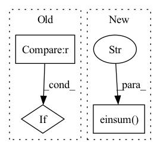

Pattern ID :1749
Before Change
:return: attention result of shape (B, N, F) where B is the batch size, N the query sequence length
and F the number of output channels (= `num_output_channels`)
if attn_mask is not None :
raise NotImplementedError("attention masks not supported yet")
q = self.q_proj(x_q)
k = self.k_proj(x_kv)After Change
attn = attn.softmax(dim=-1)
attn = self.dropout(attn)
o = torch.einsum("b h i j, b h j c -> b h i c" , attn, v)
o = rearrange(o, "b h n c -> b n (h c)", h=self.num_heads)
return self.o_proj(o)
In pattern: SUPERPATTERN
Frequency: 3
Non-data size: 3
Instances Fragment ID: 6869052
Project Name: krasserm/perceiver-io
Commit Name: c2b9af32775fd28f693dd1b572142935efd31b99
Time: 2022-09-25
Author: krasserm@googlemail.com
File Name: perceiver/model/core/modules.py
M Class Name: MultiHeadAttention
N Class Name: MultiHeadAttention
M Method Name: forward(6)
N Method Name: forward(5)
M Parent Class: nn.Module
N Parent Class: nn.Module
M File Name: perceiver/model/core/modules.py
N File Name: perceiver/model/core/modules.py
M Start Line: 64
M End Line: 93
N Start Line: 75
N End Line: 120
Before Change
v = squash(s, dim=-1)
// Update b
if it < self.num_iterations - 1 :
b = b + torch.einsum("ijk, ilk -> jl", u_hat, v)
else:
return v
After Change
// Last iteration with original u_hat to pass gradient
c = b.softmax(dim=1)
s = torch.einsum("ijk, ijkl -> ijl" , c, u_hat_temp)
v = squash(s)
return v
Fragment ID: 6869053
Project Name: riroaki/capsnet
Commit Name: 408b1e77f4e40589def9c313c0b11beaa88f2108
Time: 2020-03-08
Author: aki@akideMacBook-Pro.local
File Name: capsnet.py
M Class Name: DigitCaps
N Class Name: DigitCaps
M Method Name: forward(2)
N Method Name: forward(2)
M Parent Class: nn.Module
N Parent Class: nn.Module
M File Name: capsnet.py
N File Name: capsnet.py
M Start Line: 47
M End Line: 65
N Start Line: 52
N End Line: 84
Before Change
if self.gate_type == "features":
bsz, length, dim = _data[self.input_name].shape
self.scale = self.scale.repeat(bsz, length, 1)
elif self.gate_type == "heads" :
bsz, heads, length, head_dim = _data[self.input_name].shape
self.scale = self.scale.repeat(bsz, 1, length, 1)
else:
print(f"self.gate_type: {self.gate_type}, is not available!")After Change
}
def forward(self, _data):
_data[self.output_name] = torch.einsum(f"{self.einsum_in_1},{self.einsum_in_2}->{self.einsum_in_1}" , _data[self.input_name], self.scale)
return _data Fragment ID: 6869054
Project Name: antofuller/configaformers
Commit Name: 587753fa0f50da143bb3a3ad4da1d65e3ee72c60
Time: 2021-11-11
Author: afuller187187@gmail.com
File Name: norm_module.py
M Class Name: Gate
N Class Name: Gate
M Method Name: forward(2)
N Method Name: forward(2)
M Parent Class: nn.Module
N Parent Class: nn.Module
M File Name: norm_module.py
N File Name: norm_module.py
M Start Line: 128
M End Line: 137
N Start Line: 134
N End Line: 134